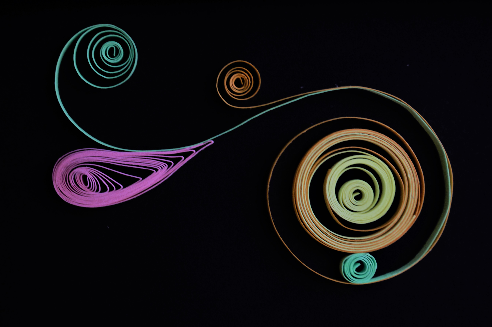

This is interactive & fun in person. I thought it would be cool to make little different kinds of windows within the word. A physical play with typography. This was pretty difficult to cut with my non-dominant hand (my dominant hand's wrist was fractured at the time).

This was a present for my cousin. It was a bit tricky because I hadn't worked with paper twirls before.
A closeup of the piece.

I made this in a time of boredom.

A necklace made with polymer clay. Perfect accessory for a mermaid.